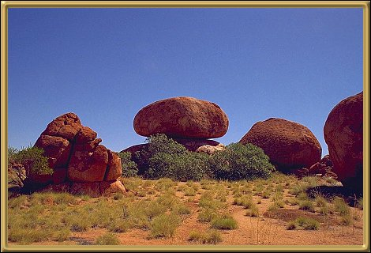

Photographer: Unknown
The Devil's Marbles are a collection of very precariously placed granite rocks. Aboriginal mythology says they were placed here by the Rainbow Serpent. They're about 100km (60 miles) south of Tennant Creek .